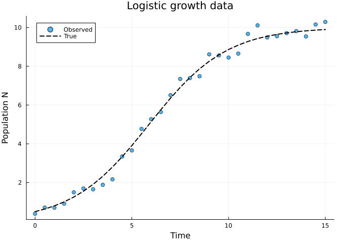
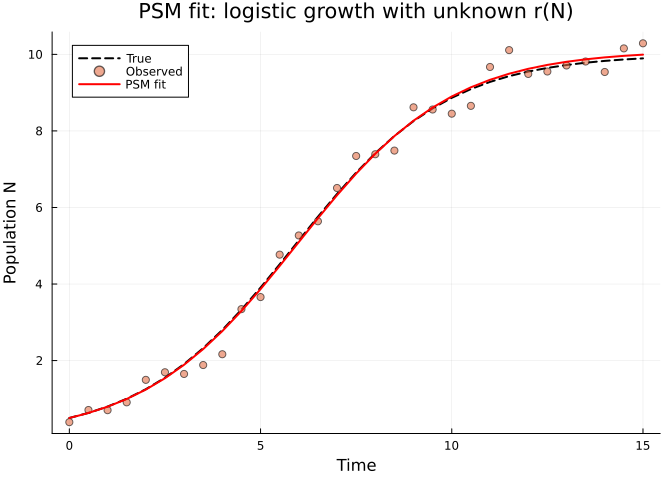
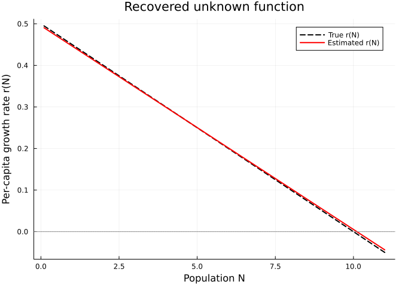
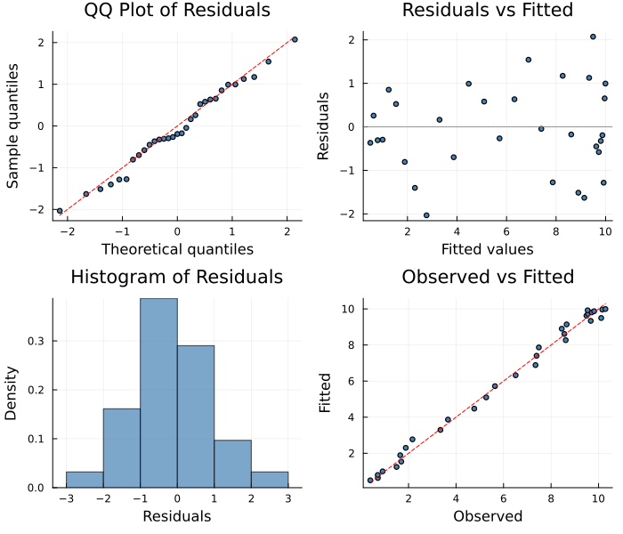

Getting Started with PartiallySpecifiedModels.jl
Overview
Partially specified models (PSMs) are dynamical systems where one or more functional responses are left unspecified and estimated from data using flexible approximators such as penalized B-splines. This approach is particularly useful in ecology, where the form of density-dependent processes is often unknown.
This vignette introduces the basic workflow of PartiallySpecifiedModels.jl:
- Define an ODE model with unknown functions
- Choose approximators for the unknowns (B-splines)
- Build a
PSMProblemwith data - Solve with
LAML()(Laplace Approximate Marginal Likelihood) - Inspect the fitted solution
We start with the simplest possible example: logistic growth with an unknown per-capita growth rate.
Vignette Guide
This package includes 35 vignettes organized by topic:
| Topic | Vignettes |
|---|---|
| Getting started | 01 (this), 02 (likelihoods) |
| Ecological models | 03 (Lotka-Volterra), 04 (copepod), 08 (consumer-resource), 10 (chemostat), 27 (predator-prey functional response), 28 (fisheries) |
| Approximator types | 05 (B-spline, GP, neural), 26 (SPDE) |
| Solver comparison | 06 (all solvers), 09 (gradient matching), 17 (BNG), 21 (GCV vs LAML), 22 (two-stage, redirect to 09), 23 (derivative-free), 31 (integral matching), 33 (ensemble Kalman), 34 (ODIN), 35 (RKHS) |
| Shape constraints | 13 (B-spline constraints), 16 (COMONet) |
| Bayesian inference | 14 (MCMC), 15 (MAGI), 19 (pseudo-marginal), 24 (variational), 25 (ABC) |
| Uncertainty | 07 (probabilistic ODE), 18 (DALTON), 29 (bootstrap CIs), 32 (profile likelihood) |
| Model selection | 30 (marginal likelihood) |
| Count data | 02 (likelihoods), 11 (epidemiological), 28 (fisheries) |
| Discrete time | 12 (Ricker, Beverton-Holt), 28 (fisheries) |
| Delay equations | 20 (DDE basics) |
| Diagnostics | All vignettes include appraise() diagnostic plots |
Setup
using PartiallySpecifiedModels
using PartiallySpecifiedModels: solve
using OrdinaryDiffEq
using Plots
using Random
Random.seed!(42)TaskLocalRNG()A Simple Example: Logistic Growth
Consider a population $N(t)$ growing according to
\[\frac{dN}{dt} = r(N) \cdot N\]
where $r(N)$ is the per-capita growth rate as a function of population size. In standard exponential growth, $r$ is constant. In logistic growth, $r(N) = r_0(1 - N/K)$. In a PSM, we leave $r(N)$ unspecified and estimate it from data.
Generate synthetic data
We generate data from a logistic model with $r_0 = 0.5$ and $K = 10$, observed with Gaussian noise:
# True logistic growth
r0, K, N0 = 0.5, 10.0, 0.5
tspan = (0.0, 15.0)
data_times = collect(0.0:0.5:15.0)
# Solve the true model
function logistic!(du, u, p, t)
du[1] = r0 * (1 - u[1] / K) * u[1]
end
true_prob = ODEProblem(logistic!, [N0], tspan)
true_sol = OrdinaryDiffEq.solve(true_prob, Tsit5(); saveat=data_times)
true_N = [true_sol(t)[1] for t in data_times]
# Add noise
σ_noise = 0.3
observed_N = true_N .+ σ_noise .* randn(length(data_times))
observed_N = max.(observed_N, 0.01) # ensure positive
scatter(data_times, observed_N, label="Observed", xlabel="Time", ylabel="Population N",
title="Logistic growth data", ms=4, alpha=0.7)
plot!(data_times, true_N, label="True", lw=2, color=:black, ls=:dash)
Define the PSM
The ODE function receives a parameter struct p containing callable unknown functions and any known parameters. Here, p.r is the unknown growth rate function:
function growth!(du, u, p, t)
N = u[1]
du[1] = p.r(N) * N
endgrowth! (generic function with 1 method)Choose an approximator
We model $r(N)$ with a penalized cubic B-spline having 8 evenly-spaced knots over the range of population sizes. The initial keyword sets the starting values for the knot coefficients:
approx_r = BSplineApproximator(:r, (0.0, 12.0), 8;
initial = x -> 0.3)BSplineApproximator(:r, (0.0, 12.0), 8, var"#5#6"())This creates a spline approximator with:
- Name:
:r— how it appears in the parameter struct - Domain: $[0, 12]$ — the range of $N$ values
- 8 knots — degrees of freedom for the shape of $r(N)$
- Initial value: constant $r = 0.3$ everywhere
Build the problem
prob = PSMProblem(
growth!, # ODE dynamics
[N0], # initial conditions
tspan, # time span
[approx_r]; # unknown function approximators
data_times = data_times,
data_values = reshape(observed_N, :, 1), # n_times × 1 matrix
obs_to_state = [1], # observe state variable 1
likelihood = Gaussian(), # Gaussian errors
solver = Tsit5() # ODE solver
)PSMProblem{typeof(growth!), Vector{Float64}, Gaussian, Tsit5{typeof(OrdinaryDiffEqCore.trivial_limiter!), typeof(OrdinaryDiffEqCore.trivial_limiter!), Static.False}}(growth!, [0.5], (0.0, 15.0), BSplineApproximator[BSplineApproximator(:r, (0.0, 12.0), 8, var"#5#6"())], [0.0, 0.5, 1.0, 1.5, 2.0, 2.5, 3.0, 3.5, 4.0, 4.5 … 10.5, 11.0, 11.5, 12.0, 12.5, 13.0, 13.5, 14.0, 14.5, 15.0], [0.3909927555644667; 0.7085441461067901; … ; 10.156370498935743; 10.28914446913904;;], [1.0; 1.0; … ; 1.0; 1.0;;], [1], NamedTuple(), Gaussian(), Tsit5{typeof(OrdinaryDiffEqCore.trivial_limiter!), typeof(OrdinaryDiffEqCore.trivial_limiter!), Static.False}(OrdinaryDiffEqCore.trivial_limiter!, OrdinaryDiffEqCore.trivial_limiter!, static(false)), Dict{Symbol, Any}(), false, Float64[], nothing)Solve with LAML
The LAML() algorithm estimates the spline coefficients and the smoothing parameter $\lambda$ simultaneously. For Gaussian data, LAML is equivalent to Restricted Maximum Likelihood (REML).
Data loss (SS): 2.66
EDF: 2.0
Smoothing λ: [2.012e6]Inspect the solution
The solution contains fitted values, estimated unknown functions, and diagnostics:
# Plot fitted trajectory
plot(data_times, true_N, label="True", lw=2, color=:black, ls=:dash,
xlabel="Time", ylabel="Population N",
title="PSM fit: logistic growth with unknown r(N)")
scatter!(data_times, observed_N, label="Observed", ms=4, alpha=0.6)
plot!(data_times, sol.fitted_values[:, 1], label="PSM fit", lw=2, color=:red)
Recover the unknown function
The fitted $r(N)$ should resemble the true logistic form $r(N) = r_0(1 - N/K)$:
r_fitted = sol.unknown_functions[:r]
N_grid = range(0.1, 11.0, length=100)
r_true = [r0 * (1 - N / K) for N in N_grid]
r_est = [r_fitted(N) for N in N_grid]
plot(N_grid, r_true, label="True r(N)", lw=2, color=:black, ls=:dash,
xlabel="Population N", ylabel="Per-capita growth rate r(N)",
title="Recovered unknown function")
plot!(N_grid, r_est, label="Estimated r(N)", lw=2, color=:red)
hline!([0.0], color=:gray, ls=:dot, label=nothing)
The PSM recovers the approximately linear decline in $r(N)$ without assuming any parametric form. The smoothing parameter $\lambda$ (estimated via LAML/REML) controls the trade-off between data fit and wiggliness.
Key Concepts
The PSMProblem
A PSMProblem combines:
| Component | Description |
|---|---|
dynamics! | ODE right-hand side f!(du, u, p, t) |
u0 | Initial conditions (vector or function of p) |
tspan | Time interval (t₀, t₁) |
approximators | Vector of AbstractApproximator (splines, neural nets) |
data_times | Observation times |
data_values | Data matrix (ntimes × nobs) |
likelihood | Error distribution (Gaussian(), Poisson(), etc.) |
solver | ODE solver from OrdinaryDiffEq.jl |
You can also construct a PSMProblem directly from a SciML problem type:
# Continuous-time (ODEProblem)
ode = ODEProblem(dynamics!, u0, tspan)
prob = PSMProblem(ode, approximators; data_times=..., data_values=...)
# Discrete-time (DiscreteProblem)
disc = DiscreteProblem(map!, u0, tspan)
prob = PSMProblem(disc, approximators; data_times=..., data_values=...)This automatically sets the solver and time-stepping mode based on the problem type.
Smoothing and EDF
The effective degrees of freedom (EDF) measures model complexity. With 8 knots, the maximum EDF is 8 (unpenalized). LAML estimates $\lambda$ to balance fit and smoothness:
- Small $\lambda$: less smoothing, higher EDF, more flexible
- Large $\lambda$: more smoothing, lower EDF, smoother curves
For our example, the true $r(N)$ is linear, so an EDF of 2 is ideal — and that is exactly what LAML delivers. It selects a very large $\lambda$ (about $2.1\times10^{6}$ above), which drives the roughness penalty to dominate and collapses the 8-knot basis onto its 2-dimensional penalty null space: the straight lines. The fitted curve therefore is a straight line, recovering the linear truth without our having assumed linearity anywhere.
This is the behaviour to expect whenever the truth lies in the penalty null space. It also shows why EDF, not the knot count, is the honest measure of complexity here: with the penalty doing its job, adding knots to this problem changes the fit very little.
Diagnostic Plots
A standard 4-panel diagnostic display assesses residual behaviour. The QQ plot checks normality of standardized residuals, “Residuals vs Fitted” detects systematic patterns (a good fit shows random scatter around zero), the histogram visualises the residual distribution, and “Observed vs Fitted” checks overall calibration (points should lie near the diagonal).
using PartiallySpecifiedModels: appraise
diag = appraise(sol)
p_qq = scatter(diag.qq_theoretical, diag.qq_sample,
xlabel="Theoretical quantiles", ylabel="Sample quantiles",
title="QQ Plot of Residuals", ms=3, legend=false, color=:steelblue)
mn, mx = extrema(vcat(diag.qq_theoretical, diag.qq_sample))
plot!(p_qq, [mn, mx], [mn, mx], color=:red, ls=:dash, label="")
p_rf = scatter(diag.fitted, diag.residuals,
xlabel="Fitted values", ylabel="Residuals",
title="Residuals vs Fitted", ms=3, legend=false, color=:steelblue)
hline!(p_rf, [0], color=:gray, ls=:dot)
p_hist = histogram(diag.residuals, normalize=:pdf,
xlabel="Residuals", ylabel="Density",
title="Histogram of Residuals", legend=false, color=:steelblue, alpha=0.7)
p_of = scatter(diag.observed, diag.fitted,
xlabel="Observed", ylabel="Fitted",
title="Observed vs Fitted", ms=3, legend=false, color=:steelblue)
mn2, mx2 = extrema(vcat(diag.observed, diag.fitted))
plot!(p_of, [mn2, mx2], [mn2, mx2], color=:red, ls=:dash, label="")
plot(p_qq, p_rf, p_hist, p_of, layout=(2, 2), size=(700, 600))
Durbin-Watson: 1.636Summary
The basic workflow is:
- Write
dynamics!(du, u, p, t)— access unknown functions viap.name(x) - Create
BSplineApproximator(:name, domain, nknots)for each unknown - Build
PSMProblem(dynamics!, u0, tspan, approximators; data=..., likelihood=...) - Call
solve(prob, LAML()) - Access
sol.unknown_functions[:name]for the fitted functions